40 سؤال
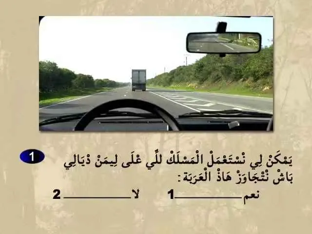
الجواب الصحيح: 2
حتى إلا كان الطريق على اليمين خاوي، التجاوز خاص يكون غير من اليسار ماشي من اليمين. إلا إلا كانت شي طوموبيل غادا تدور لليسار، هنا نقدر نتجاوز من اليمين.
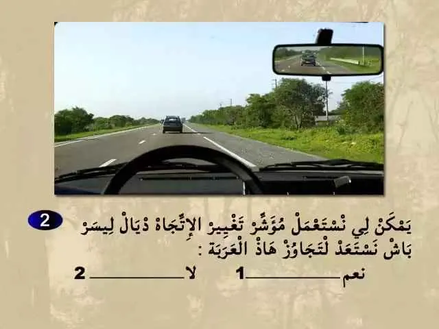
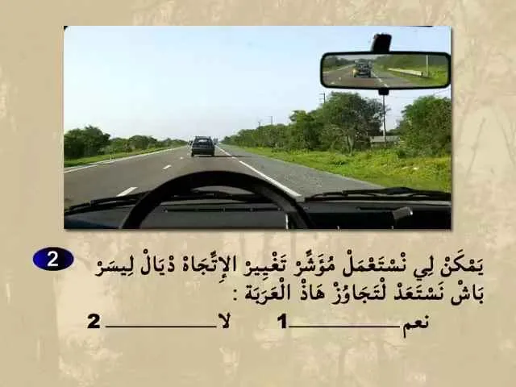
الجواب الصحيح: 2
الخط المتقطع كيعطينا الحق فالتجاوز، ولكن إلا كان طوموبيل ورايا شاعلة السينيال باش تتجاوز، ما يمكنش نتجاوز حيث الطوموبيل اللي ورايا غادا تتجاوز.
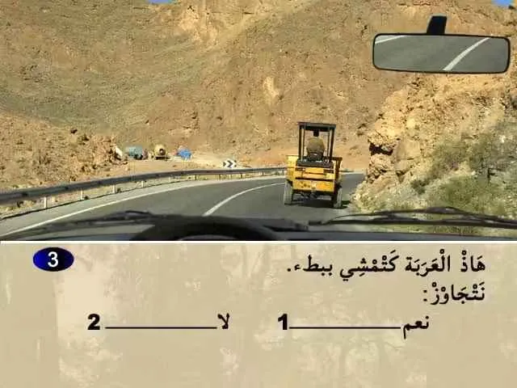
الجواب الصحيح: 2
ما يمكنش نتجاوز الطوموبيل اللي قدامي الخط المتصل كمنعنا.
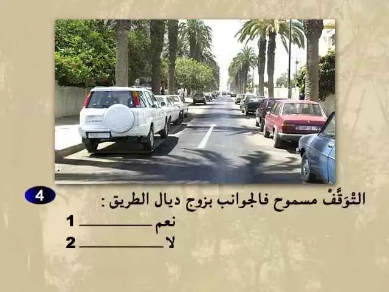
الجواب الصحيح: 1
التوقف مسموح على اليمين وعلى اليسار، حيث الطريق فيها اتجاه واحد، ما كاينش طوموبيلات جاية من الاتجاه المعاكس. هادشي اللي كيبينه السهم اللي مرسوم على الأرض.
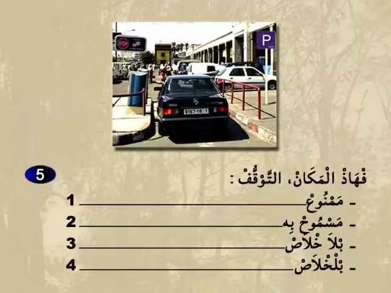
الجواب الصحيح: 2 و 4
هاد البلاصة التوقف مسموح، وكاين بلاصة ديال الطوموبيلات، ولكن ماشي مجاني، هادشي كيبينه الإشارة الخاص بالدّفع على اليسار.
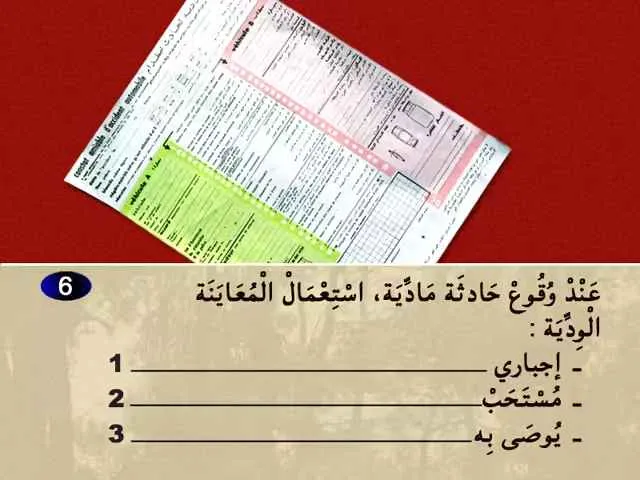
الجواب الصحيح: 2 و 3
إلا وقعات حادثة مادية، ماشي ضروري نستعمل المعاينة الودية، ولكن مزيان نستعملها.
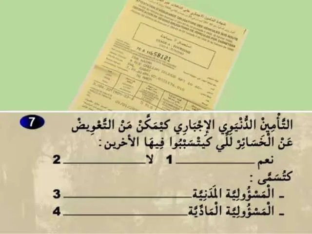
الجواب الصحيح: 1 و 3
التأمين الإجباري كيغطي الخسائر اللي تسبب فيها الآخرين، وهنا كنسميها المسؤولية المدنية. ولكن التأمين الشامل كيغطي حتى المسؤولية المادية.
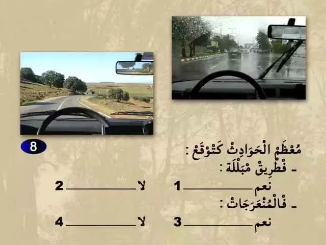
الجواب الصحيح: 2 و 4
الحوادث الطرقية ماشي ضروري توقع فطريق مبللة ولا فالمنعرجات، الحوادث تقدر توقع فأي طريق، غالبا السبب هو السلوك ديال السائق.
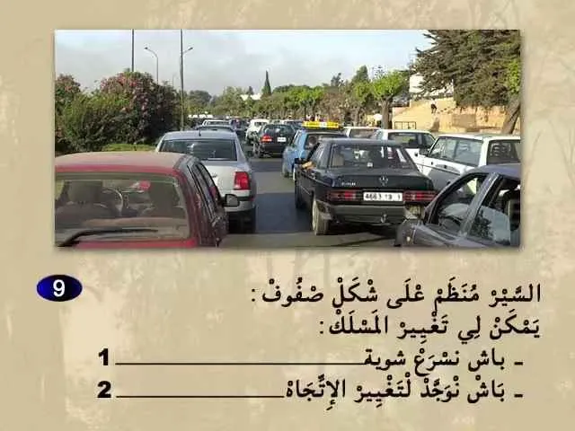
الجواب الصحيح: 2
إلا كانت الطريق عامرة، ما يمكنش نبدل المسلك باش نسرع، يمكن نبدل المسلك غير باش نبدل الاتجاه.
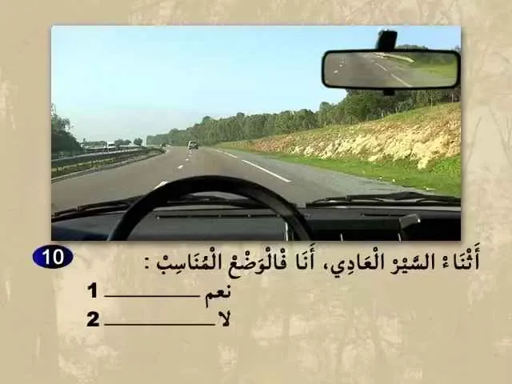
الجواب الصحيح: 1
فالسير العادي، المسلك المناسب هو اللي على اليمين. فالصورة باين حنا في المسلك اللي على اليمين، يعني حنا فالمكان المناسب.
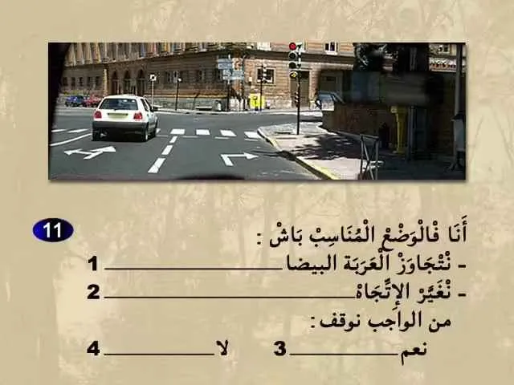
الجواب الصحيح: 2 و 4
فهاد الحالة، يمكن نبدل الاتجاه نحو اليمين حيث السهم المرسوم كيأمرني ندور، والإشارة الضوئية الخضرا كتسمح لي بالإنعطاف على اليمين. بالنسبة لتجاوز العربة البيضا ماخصنيش نتجاوز حيث، اولا التجاوز خاص يكون من اليسار وماشي من هاد المسلك، ثانيا الإشارة الضوئية حمراء، و ثلثا الخط المتصل على اليسار كيمنع التجاوز.
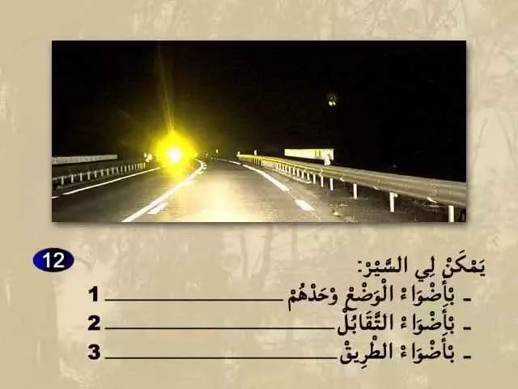
الجواب الصحيح: 2
إلا كنت فوضعية التقابل مع طوموبيل، خاصني نستعمل الأضواء ديال التقابل.
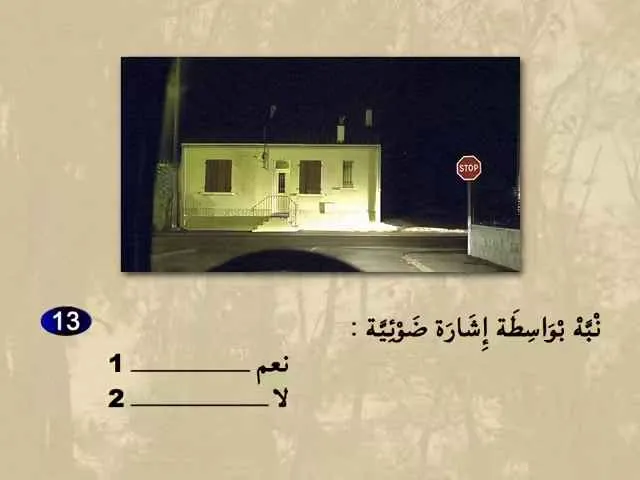
الجواب الصحيح: 1
فالفترة الليلية وقرب ملتقى الطرق، يمكن نستعمل الإشارة الضوئية باش ننبه الطوموبيلات اللي جاية من اليمين واليسار.
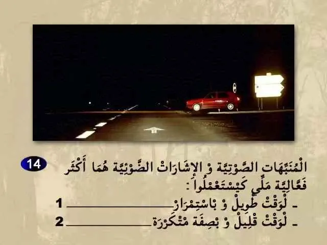
الجواب الصحيح: 2
المنبهات الصوتية والإشارات الضوئية كيكونو فعالين إلا استعملناهم لوقت قليل وبصفة مكررة.
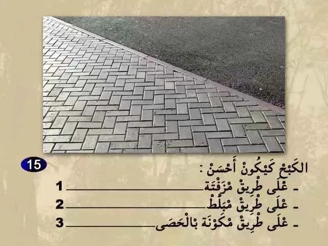
الجواب الصحيح: 1
الكبح كيبقى أفضل فوق طريق مزفتة.
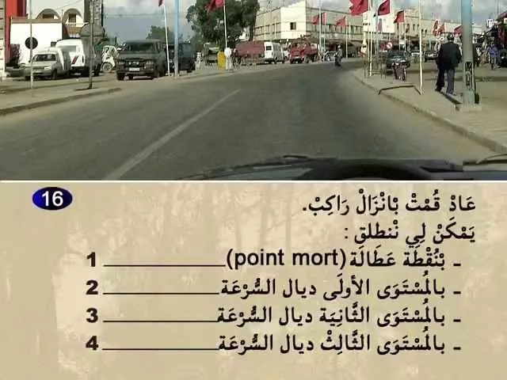
الجواب الصحيح: 2
إلا نزلت راكب، يمكن نكمل بالسير بالمستوى الأول من السرعة.
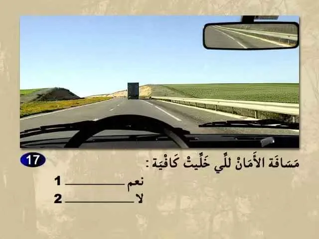
الجواب الصحيح: 1
فالصورة كيبان أن بيني وبين الشاحنة تقريبا 75 متر، مسافة أمان كافية.
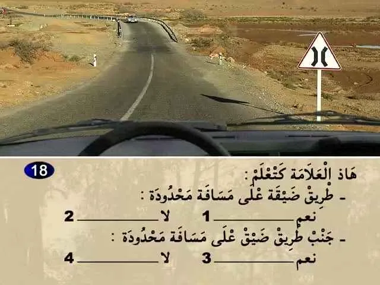
الجواب الصحيح: 1 و 4
الإشارة الطرقية كتعني الطريق ضيقة على مسافة محدودة، ماشي جوانب الطريق.
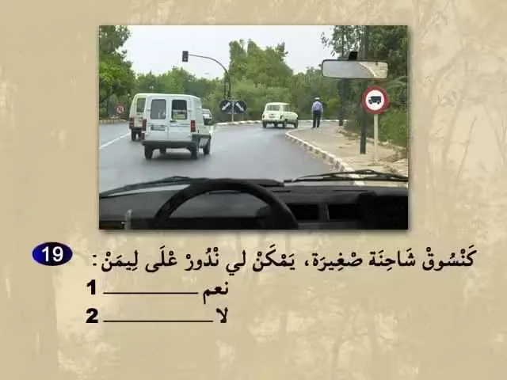
الجواب الصحيح: 1
الإشارة الطرقية كمنع الشاحنات الكبيرة من المرور على اليمين، وأنا كنقود طوموبيل صغيرة، يعني المنع ما كيعنينيش.
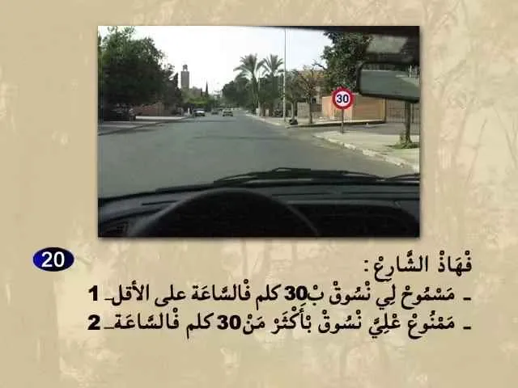
الجواب الصحيح: 2
الإشارة الطرقية كتعني ممنوع نسوق بسرعة فوق 30 كلم/ساعة.
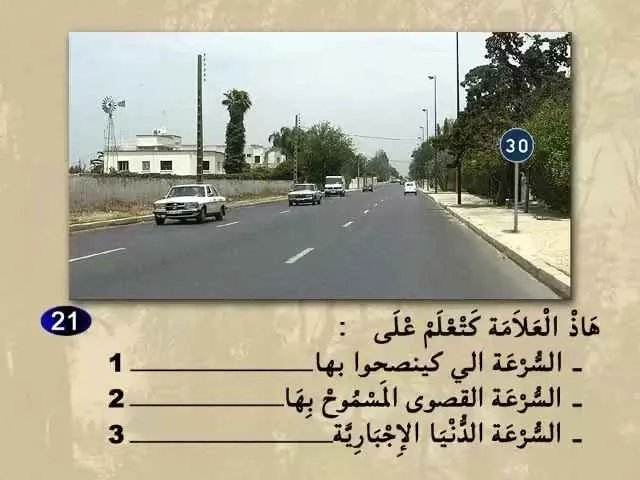
الجواب الصحيح: 3
الإشارة الطرقية كتعني السرعة الدنيا الإجبارية، يعني ممنوع نسوق بسرعة أقل من 30 كلم/ساعة.
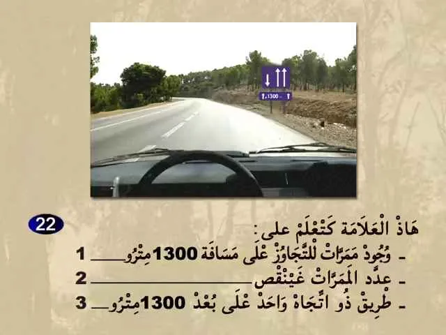
الجواب الصحيح: 1
الإشارة الطرقية كتعني أن ممرات التجاوز كاينة على مسافة 1300 متر.
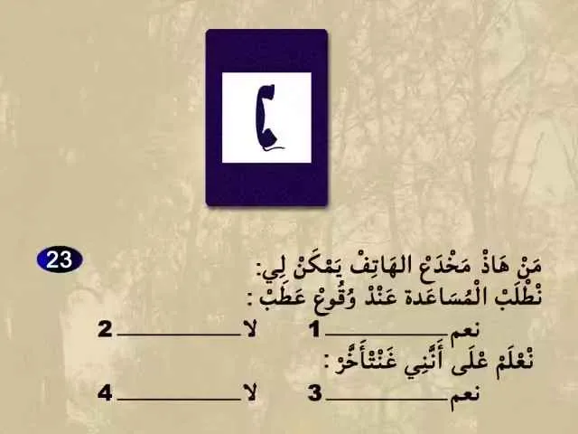
الجواب الصحيح: 1 و 4
الإشارة الطرقية كتعني مخدع الهاتف، يمكن نستعمله فقط لطلب المساعدة بسبب عطب.
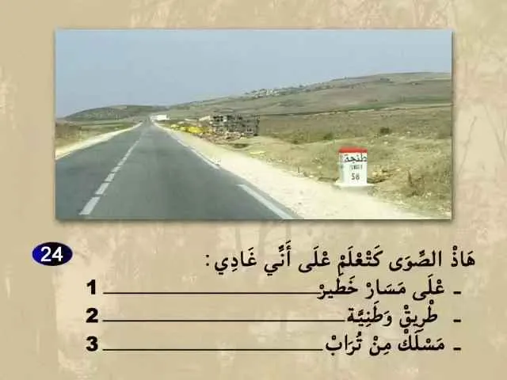
الجواب الصحيح: 2
الصوى اللي مكتوب عليها طنجة كتعني أننا فطريق وطنية.
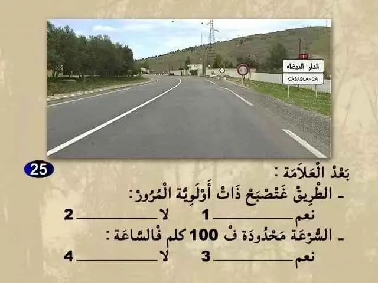
الجواب الصحيح: 2 و 4
ما كايناش إشارة طرقية كتقول أن الطريق غادي تولي ذات أولوية للمرور. بما أننا دخلنا للمدينة، السرعة محدودة ف 60 كلم/ساعة ماشي 100 كلم/ساعة.
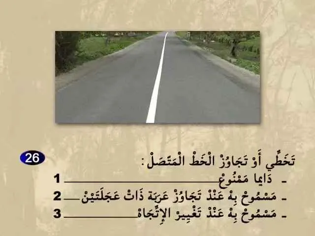
الجواب الصحيح: 1
تجاوز الخط المتصل ممنوع دائما.
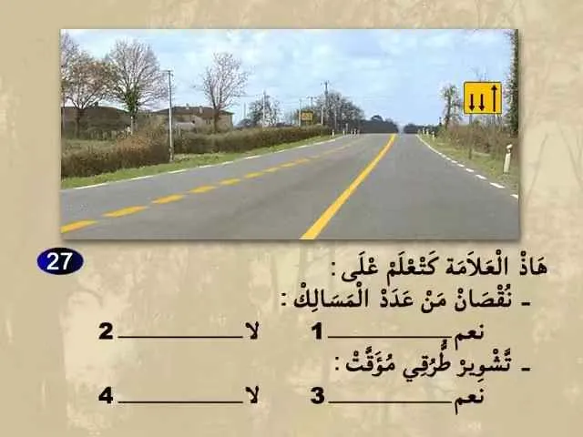
الجواب الصحيح: 2 و 3
الإشارة الطرقية ما كتعنيش نقصان من عدد المسالك الطرقية، واللون الأصفر كيعني أن التشوير مؤقت.
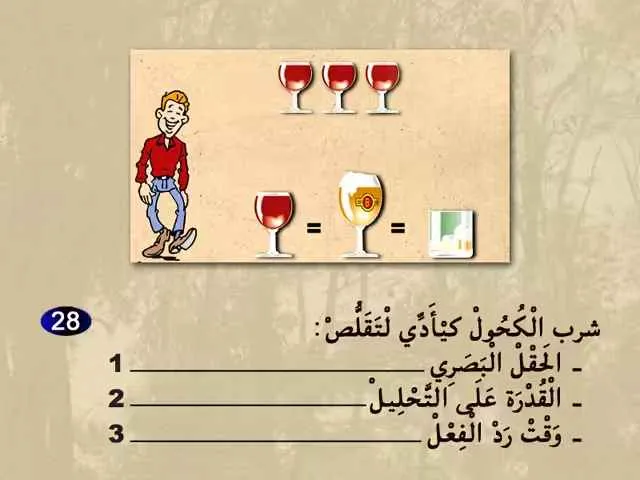
الجواب الصحيح: 1 و 2
شرب الكحول كيقلص الحقل البصري والقدرة على التحليل، وكيزيد من وقت رد الفعل.
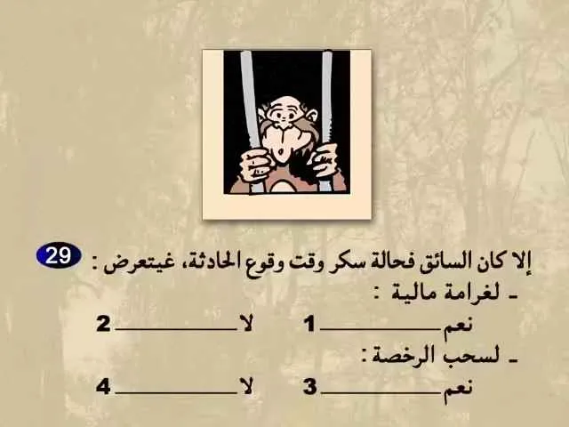
الجواب الصحيح: 1 و 3
إلا وقع حادث والسائق في حالة سكر، غادي يتعرض لغرامة مالية وسحب رخصة السياقة.
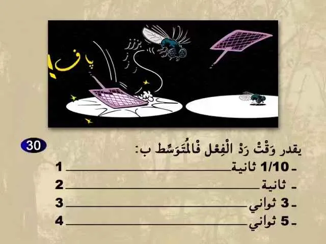
الجواب الصحيح: 2
متوسط وقت رد الفعل كيقدر بثانية واحدة.
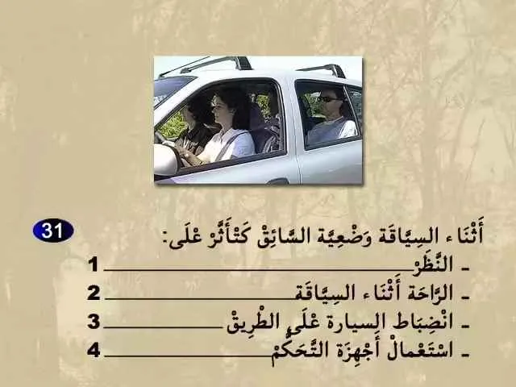
الجواب الصحيح: 1 و 2 و 4
وضعية السائق أثناء السياقة كتأثر على النظر وراحة الجلوس واستعمال أجهزة التحكم.
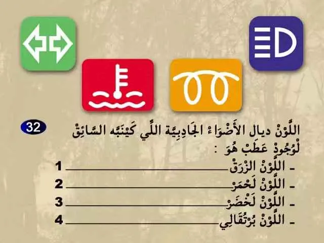
الجواب الصحيح: 2
لون الأضواء الجادبة اللي كتنبه السائق بوجود عطب هو الأحمر.
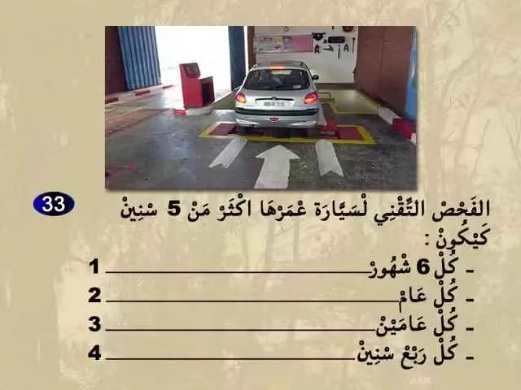
الجواب الصحيح: 2
إلا فات عمر السيارة 5 سنوات، خاصها الفحص التقني كل عام.
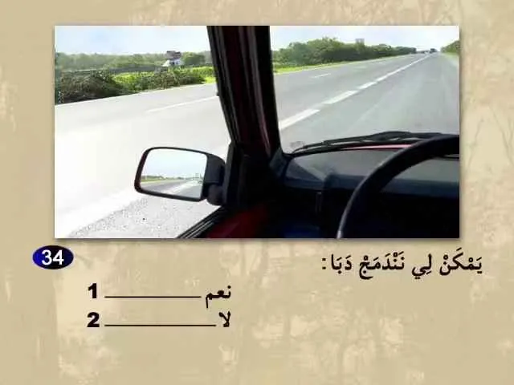
الجواب الصحيح: 1
المراة الجانبية كتوضح ما كايناش طوموبيلات جاية من الخلف، يمكن نندمج في حركة السير.
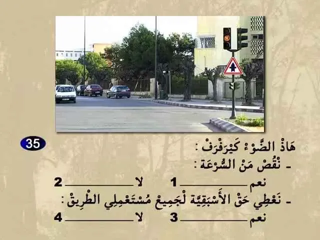
الجواب الصحيح: 1 و 4
الإشارة الضوئية كترفرف يعني غير شغالة، خاصني ننقص السرعة. والإشارة الطرقية اللي تحتها كتعني عندي حق الأسبقية فهاد الملتقى.
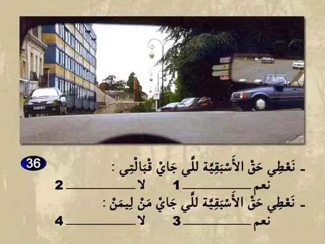
الجواب الصحيح: 2 و 3
الطوموبيل اللي على اليسار ما نعطيهاش حق الأسبقية حيث غادا تبدل الاتجاه وغادي نولي على يمينها، يعني عندي حق الأسبقية. الطوموبيل اللي جاية من اليمين خاصني نعطيها حق الأسبقية.
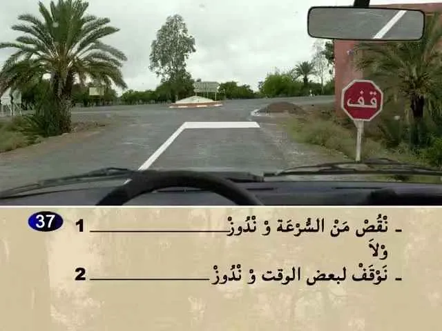
الجواب الصحيح: 2
عندنا علامة قف، خاص نوقف ونتأكد الطريق فارغة قبل المرور.
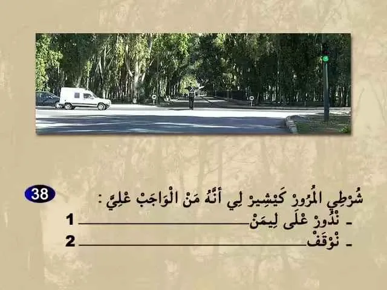
الجواب الصحيح: 2
إلا كان شرطي المرور كيشوف لينا مباشرة، هاد الإشارة تعني الوقوف.
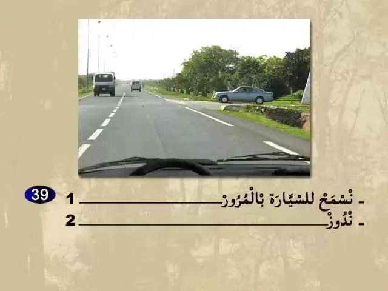
الجواب الصحيح: 2
حنا فطريق رئيسية والطوموبيل اللي على اليمين فالطريق غير معبدة، خاصها تنتظر حتى تولي الطريق فارغة باش تمر، يعني أنا اللي نمر أول.
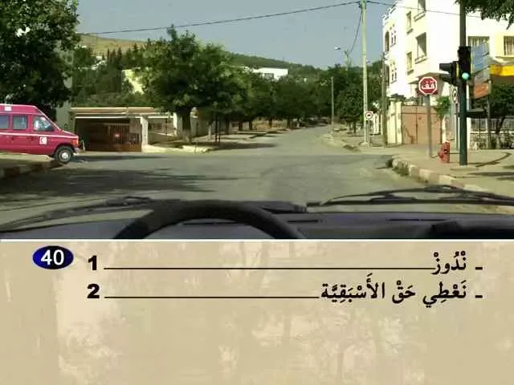
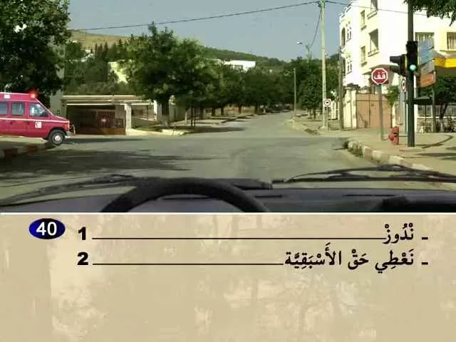
الجواب الصحيح: 2
الإشارة الضوئية الخضراء كتعني المرور ولكن خاصني نعطي حق الأسبقية لسيارة الإسعاف حيث فمهمة مستعجلة.